Craques que vão estar na copa do mundo
Promessas
Vinicius Junior
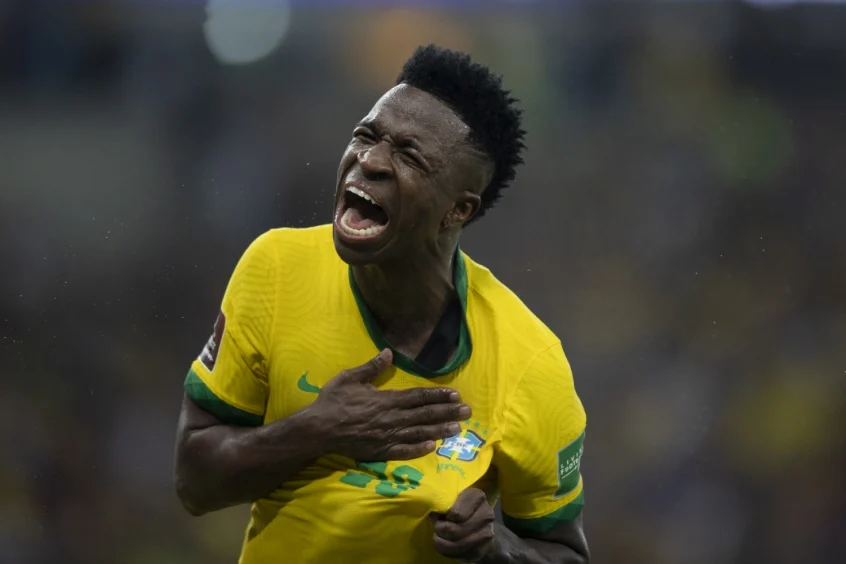Ja que é pra começar bem,vamos falar de Vini Junior,a promessa brasileira de 22 anos que fez uma temporada excepcional pelo Real Madrid,faturando La Liga e Champions League,detalhe, com gol do brasileiro na final, Vinicius nessa temporada disputou 35 jogos, anotando 17 gols e 13 assistências ele vem em ótima fase e promete uma belissíma Copa do Mundo.
Rodrygo
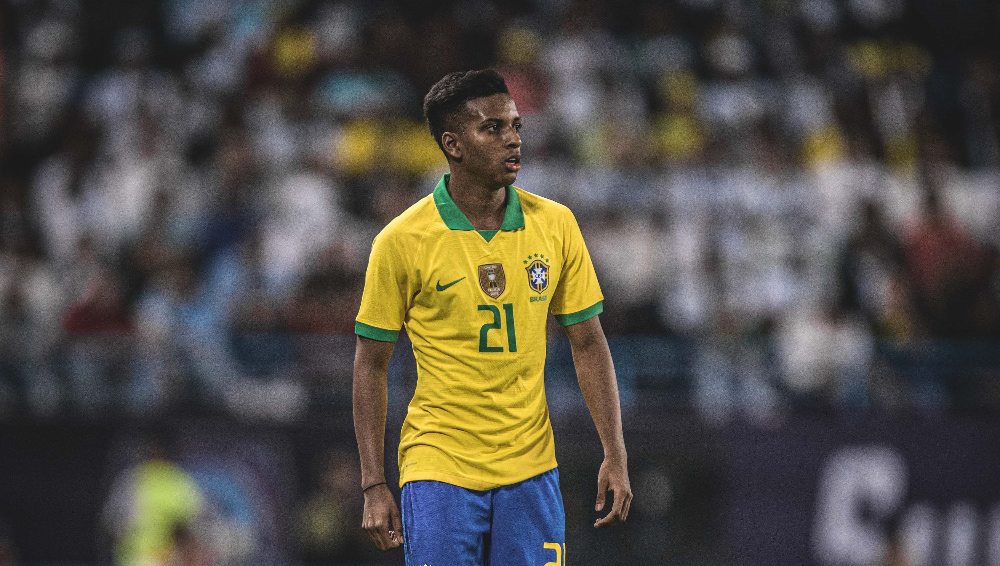Parceiro de Vini Junior na seleção e no Real Madrid,Rodrigo de 21 anos pode fazer a diferença para o Brasil na Copa, após uma ótima temporada pelo Real Madrid onde o brasileiro jogou 49 partidas,fez 9 gols e distribuíu 10 assistências,ele vem em muito boa fase.
Alphonso Davies
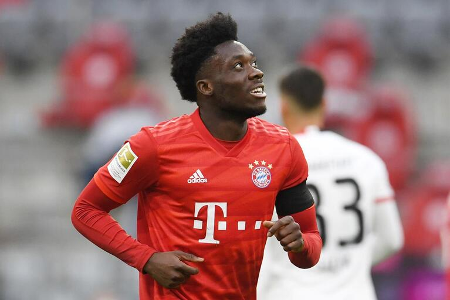O lateral canadense que chamou atenção pela sua incrível velocidade tanto para atacar quanto para defender, Alphonso Davies de 21 anos vem para sua primeira Copa e deve ser de grande ajuda para seleção canadense. Atualmente no Bayern de Munique,o jogador na última temporada disputou 31 jogos e deu 6 assistências.
Darwin Núñez
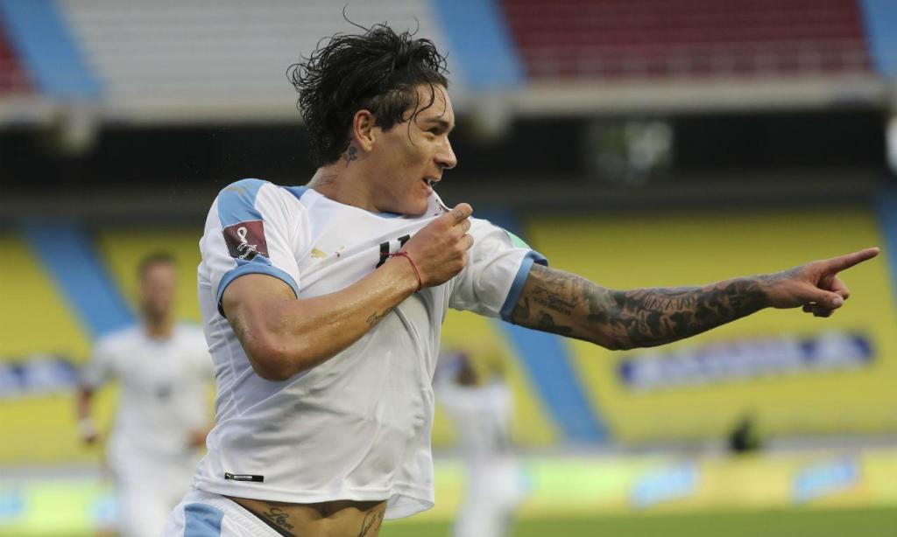Parece que a seleção Uruguaia continuará com atacantes de alto nível, após anos com Luiz Suárez e Edinson Cavani, surge uma nova promessa, Darwin Núñez de 23 anos, atualmente no Liverpool mas que passou a última temporada no Benfica, onde disputou 41 jogos, marcou 34 gols e deu 4 assistências, ótimos números para um atacante. O craque pode ser de grande ajuda para a seleção uruguaia na Copa do Mundo.
Pedri
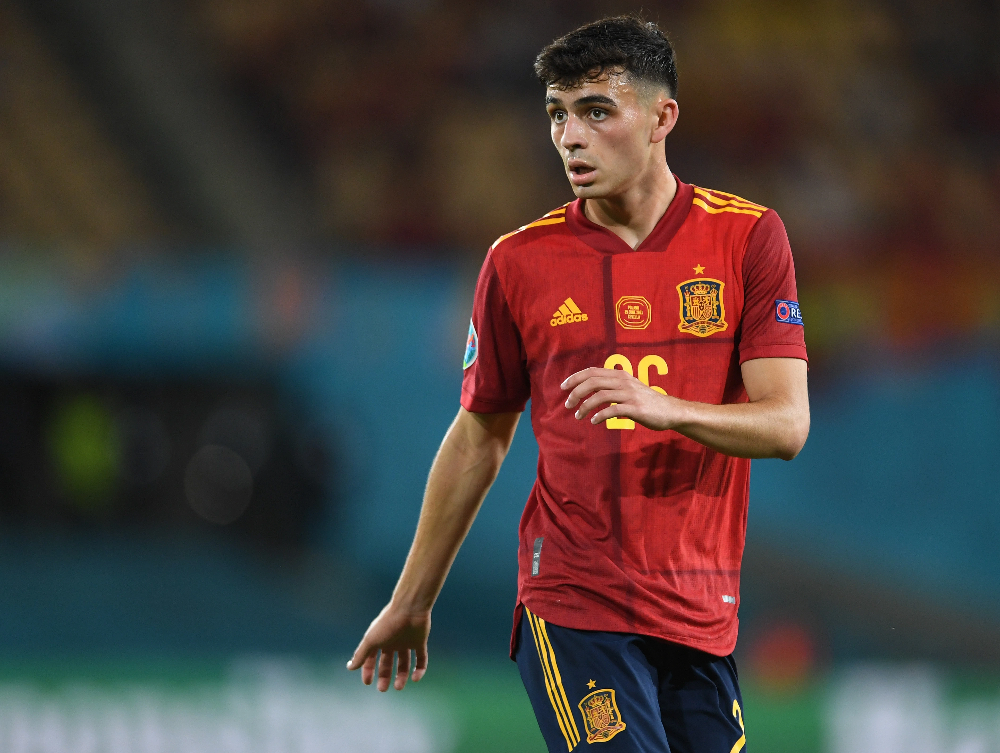"Novo" Xavi como alguns o chamam,Pedri, o meio-campista de 19 anos do Barcelona que ganhou o prêmio Golden Boy de 2021(prêmio para o melhor jogador jovem) também vem bem para a Copa, com uma ótima visão de jogo ele pode reforçar o meio campo da seleção espanhola. Na última temporada, pelo Barcelona Pedri disputou 21 partidas,fez 4 gols e deu 1 assitência.
João Félix
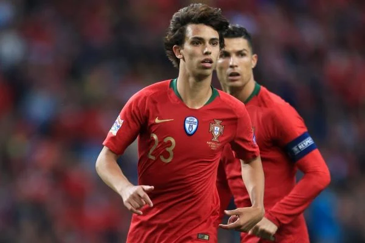O atacante português vem para sua primeira Copa, após se destacar no Benfica e ser comprado pelo atletico de Madrid, ele teve uma queda de rendimento mas vem com tudo para Copa,parece que a seleção portuguesa finalmente tem peças para almejar a taça. O jogador na última temporada jogou 33 partidas,fez 9 gols e deu 6 assistências.
Veteranos
Luka Modrić
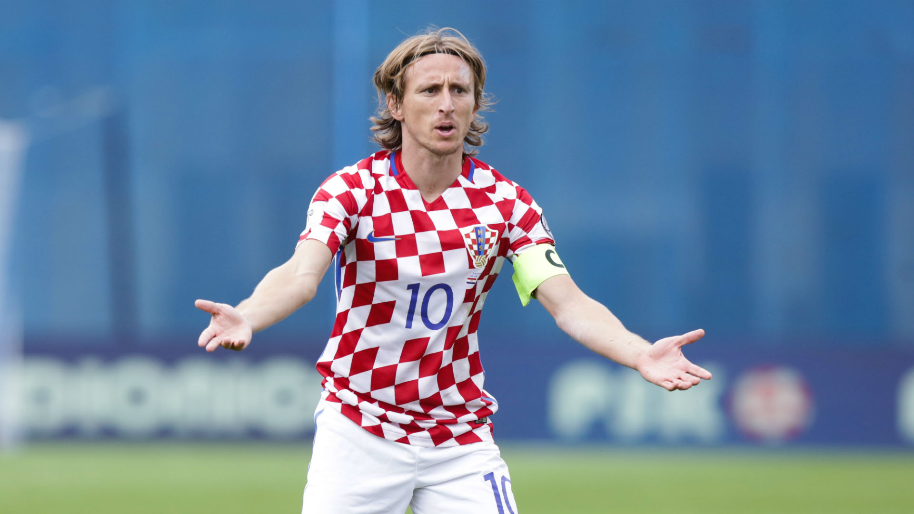Agora vamos falar de jogadores mais experientes e que ja disputaram outra(s) copa(s),como por exemplo o Craque Croata de 36 anos Luka Modrić,que joga no meio campo do Real Madrid, Modrić dispensa comentários,domina o meio-campo do real à uma década e foi um dos melhores jogadores da última copa. Modrić está atualmente no Real Madrid e na última temporada disputou 45 jogos,anotou 3 gols e 12 assistências.
Kevin De Bruyne
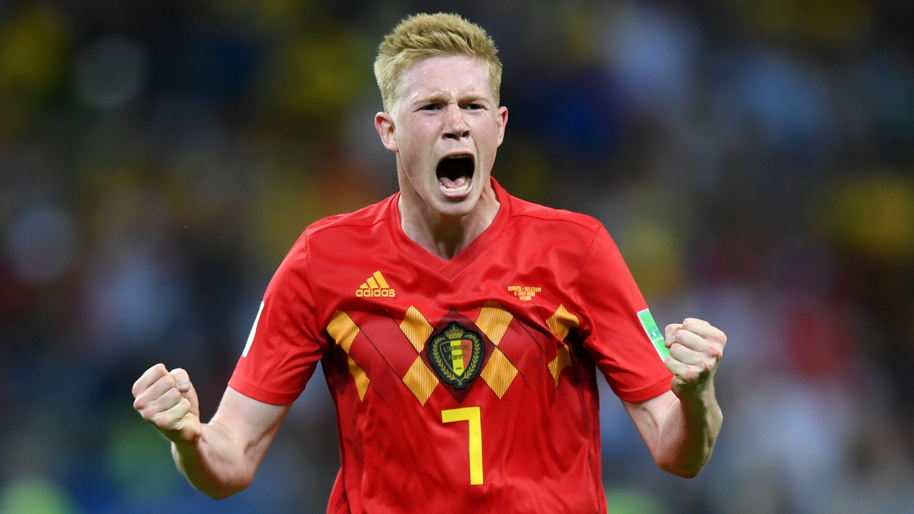Já que estamos falando de meio-campistas experientes,o Belga De Bruyne de 31 anos tem que estar incluso, atualmente no Manchester City,ele fez uma ótima temporada e foi de extrema importância para conquista da Premier League ganha pelo time inglês, o craque foi muito bem na última copa e vem preparado para Copa de 2022. Pelo time inglês ele jogou 45 partidas, marcou 19 gols e distribuíu 14 assistências.
Virgil Van Dijk
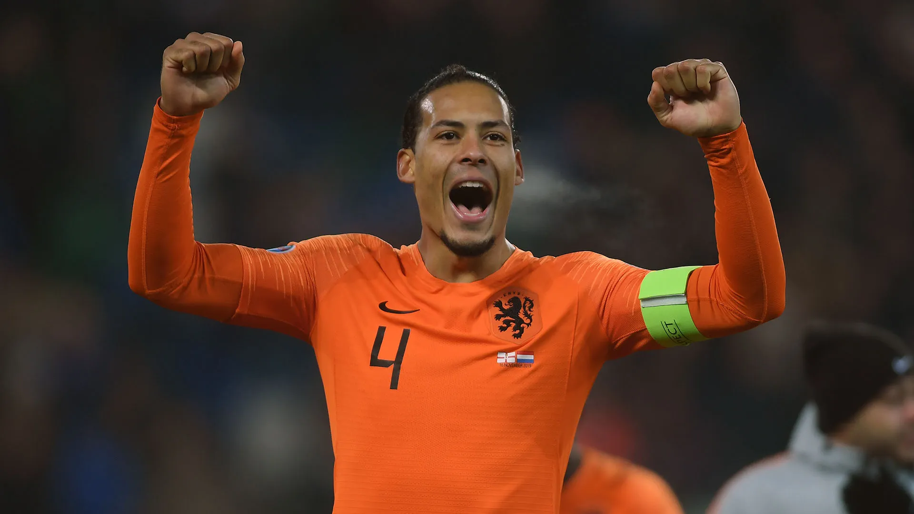O zagueiro neerlandes do Liverpool,Van Dijk, que passou quase uma temporada(2018/19) inteira sem levar dribles, pode ser o carrasco de alguns atacantes e o líder da seleção holandesa,o jogador é um exemplo de liderança e de força. Atualmente com 31 anos, o zagueiro disputou 51 partidas, fez 3 gols e deu 5 assistências na última temporada.
Gareth Bale
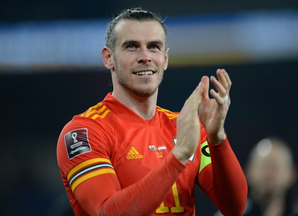Um dos melhores galêses da história do futebol,Gareth Bale de 32 anos vem forte para esta copa, sabemos que ele tem problemas com compromentimento graças ao golfe mas ele nunca hesitou em defender sua seleção, Bale foi muito decisivo para classificar a seleção de gales para esta copa e por mais que ela seja uma seleção fraca ele pode se destacar bastante. Atualmente está sem clube mas na última temporada estava no Real Madrid onde disputou 7 partidas e fez 1 gol.
luiz Suárez
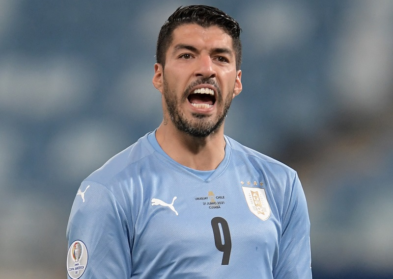"El pistoleiro", apelido para um dos maiores atacantes da última década,Luis Suárez de 36 anos vem para talvez disputar sua última Copa do Mundo, atualmente no atletico de Madrid, o atacante jogou 45 partidas,fez 13 gols e deu 3 assistências, claro que não está em sua melhor fase devido a sua idade mas pode surpreender na Copa e levar o Uruguai a conquistar a sua terceira Copa do Mundo.
Sadio Mané
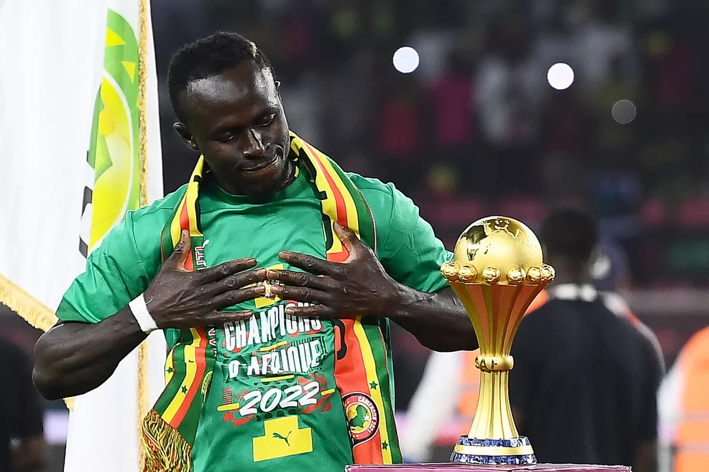O jogador senegalês de 30 anos, Sadio Mané, vem de uma ótima temporada pelo Liverpool onde disputou 48 jogos,fez 16 gols e deu 9 assistências, o atacante está atualmente no Bayern de Munique e pode levar a seleção de Senegal longe nesta Copa.
Koulibaly
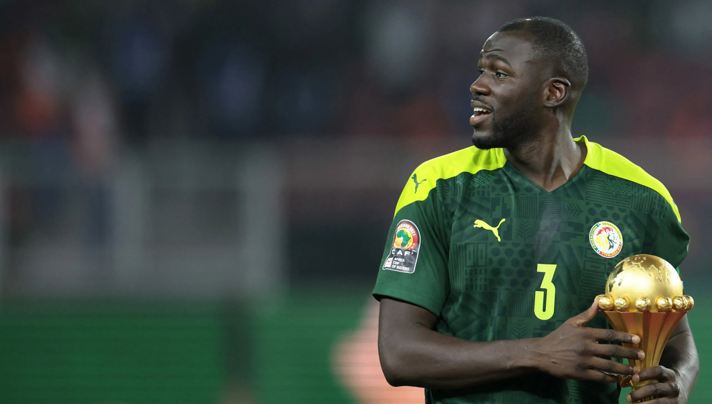Ao lado de Sadio Mané, Koulibaly também pode ser de grande ajuda para seleção de Senegal, o jogador de 31 anos vem se mostrando um grande zagueiro, atualmente no Napoli o jogador disputou 27 partidas,fez 3 gols e deu 3 assistências.
Robert lewandowski
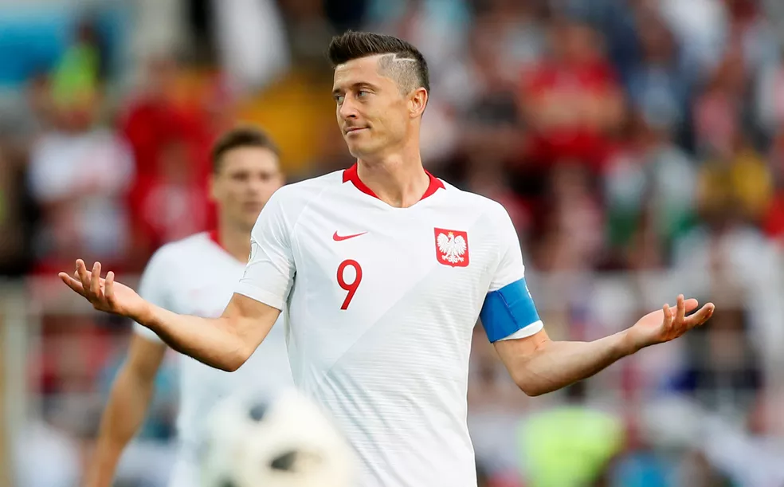O atacante polaco de 33 anos é o diferencial da seleção polonesa com o seu grande faro de gol,sabemos que sua seleção não conta com grandes nomes mas com lewandowski no ataque ela pode surpreender. Atualmente no Bayer de Munique, mas que está buscando uma transferência para outro clube, Robert na última temporada jogou 46 jogos,fez 50 gols e deu 7 assistências,números estrondosos,ele vem mais que forte para a Copa.
Toni Kroos
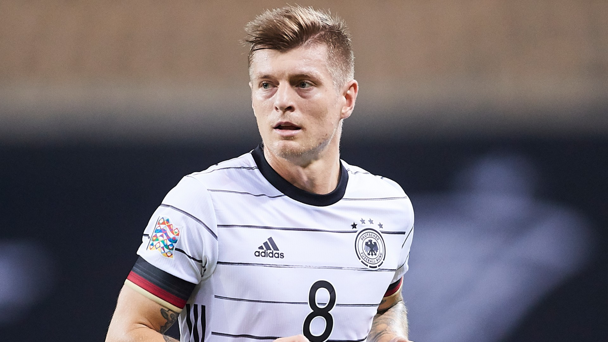O meia alemão de 32 anos vem para mais uma copa,após o fiasco da alemanha em 2018,o craque espera conquistar sua segunda Copa e a quinta da sua seleção,ele vem de uma temporada muito boa onde ele foi uma peça importante no time do Real Madrid que ganhou a Champions e a La Liga. Kross na última temporada disputou 44 partidas, fez 3 gols e deu 3 assistências.
Manuel Neuer
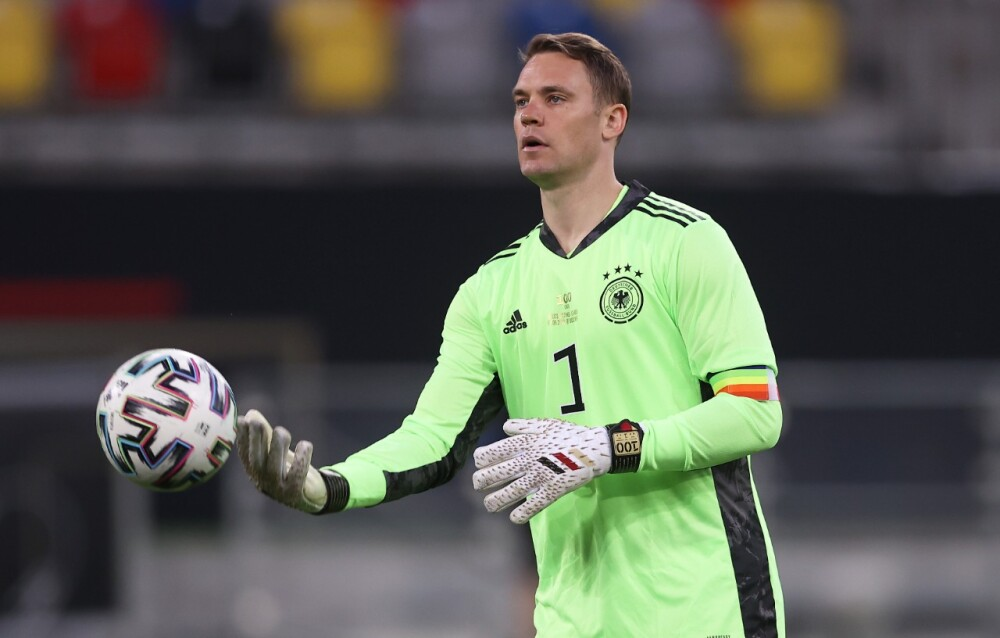Ao lado de Kroos na seleção alemã, o goleiro vem para mais uma Copa, agora com 36 anos ele talvez dispute sua última. Nós esperamos uma ótima Copa dele após uma boa temporada pelo Bayern de Munique onde ele foi mais uma vez campeão.
Di María
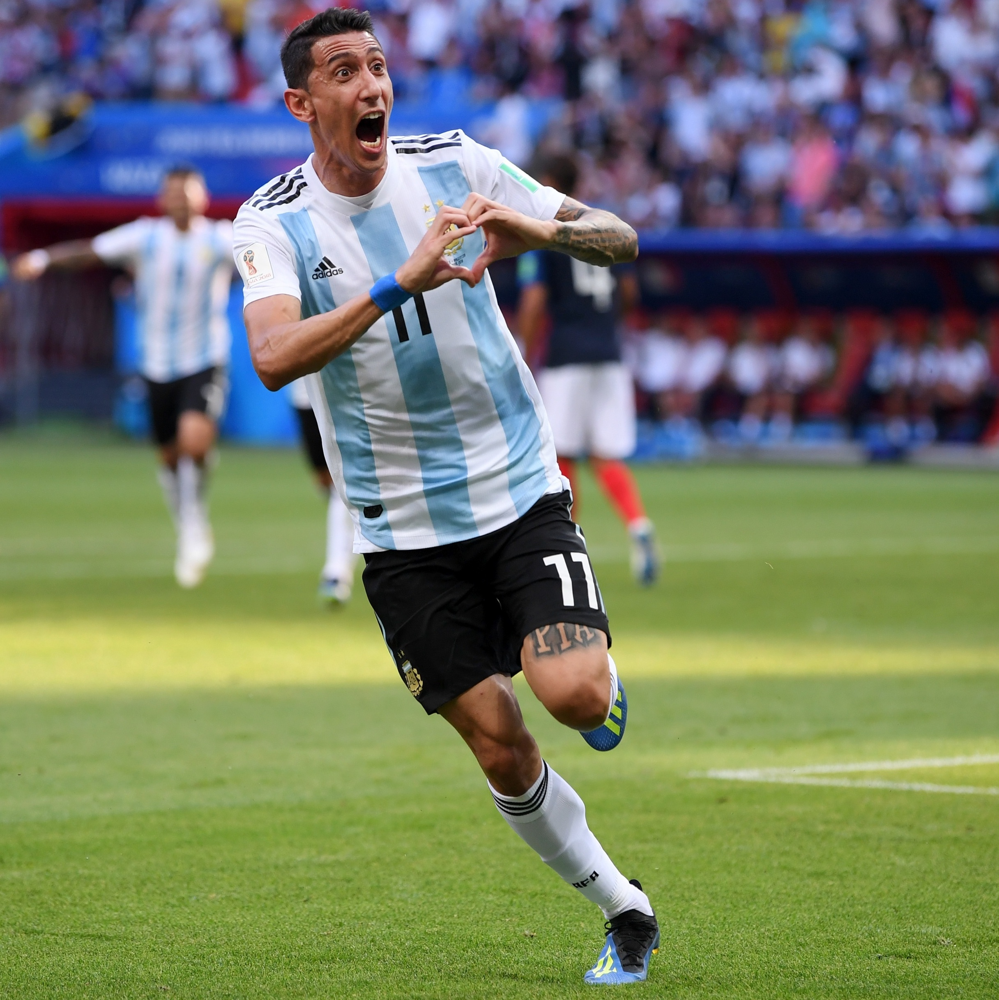O craque argentino que fez o gol do título da argentina na Copa América vem embalado para Copa, após deixar o PSG, o craque só tem olhos para taça e vai dar o máximo para levar o título para a Argentina. Na última temporada pelo PSG, o atacante jogou 31 jogos, fez 5 gols e deu 9 assistências.
Son Heung-Min
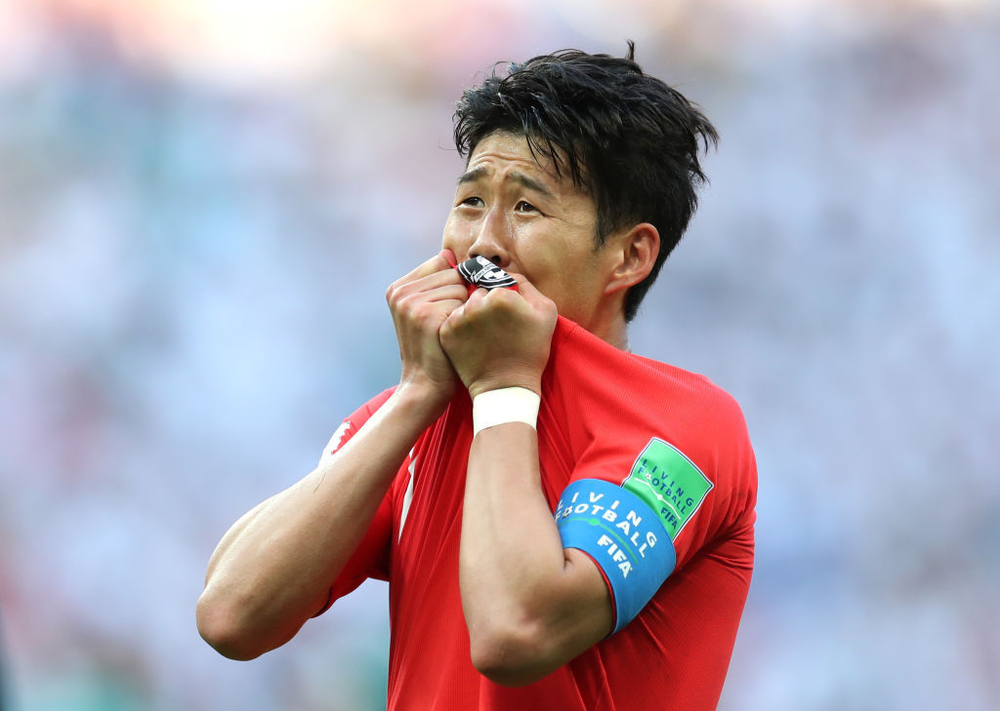Um dos jogadores impossíveis de se odiar,Son de 30 anos,vem preparado para a Copa do Mundo após mais uma temporada muito boa no Tottenham onde o jogador Coreano disputou 45 partidas, fez 24 gols e deu 10 assistências. Son vem com todo seu carisma novamente depois da Copa de 2018, que para ele foi inesquecível pois o craque fez o segundo gol da Coreia do Sul sobre a Alemanha,que acabou decretando a saída da seleção alemã da Copa antes mesmo do mata-mata.
Keylor Navas
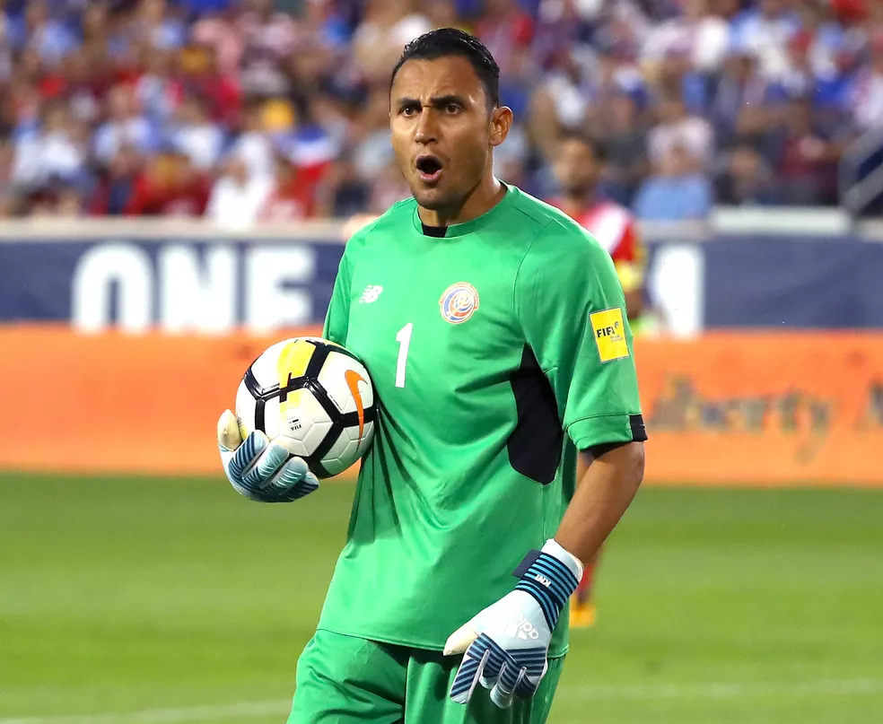Os "miliores"

Neymar Junior
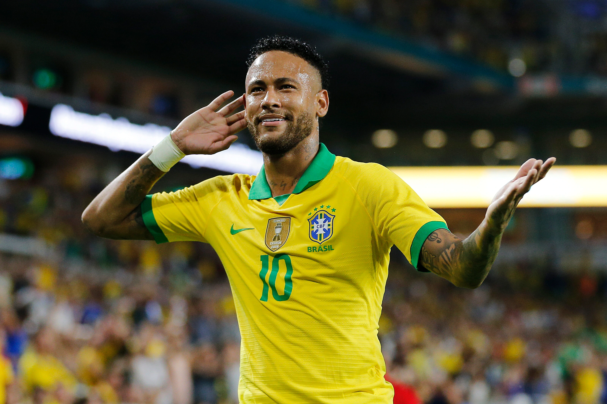Neymar,o craque brasileiro de 30 anos vem pra sua terceira copa do mundo,não vem em boa fase no PSG mas é uma das esperanças da nação brasileira, o "menino Ney" não é mais menino e tem que assumir a responsabilidade de camisa 10 da seleção. Mas uma coisa eu te garanto, se o Neymar jogar tudo que sabe,jogar com a "ousadia e alegria" dele, ele vai ser imparável e vai levar a seleção brasileira longe nesta Copa. O jogador brasileiro na última temporada disputou 28 jogos,fez 13 gols e deu 8 assistências.
Lionel Messi

Agora vamos falar do melhor jogador argentino da história, Lionel Messi, ao lado de neymar atualmente no PSG, o Craque argentino de 35 anos vem animado para copa do mundo após faturar a copa América e busca o triunfo de ser campeão pela sua seleção e levar a gloria à Argentina. Messi vem de uma temporada apática pelo PSG, o jogador disputou 34 partidas, fez 11 gol e deu 15 assistências mas apesar da temporada não muito boa sabemos muito bem que Messi é um jogador que não precisa de muito para decidir uma partida. Esperamos que o craque faça uma ótima copa que talvez seja sua última.
Cristiano Ronaldo
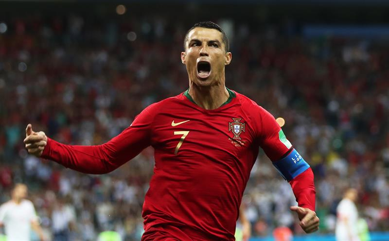Cristiano Ronaldo, o gajo português agora com 37 anos pode disputar talvez sua última Copa mas sabemos bem que com o físico dele ele jogaria mais umas 3 copas fácilmente, após uma temporada não muito boa pelo Manchester United onde o craque jogou 38 partidas, fez 24 gols e deu 3 assistências,o "Robozão" espera se entregar ao máximo na Copa pela seleção portuguesa e conquistar sua primeira Copa do Mundo.
Alto nível
Frenki de Jong

O Meia-campista de 25 anos do Barcelona pode se destacar nesta Copa, De Jong já mostrou para o mundo que é um ótimo jogador e que pode jogar em várias posições, ele também conta com a seleção da Holanda que vem em ótima fase. Na última temporada pelo Barcelona, o craque jogou 45 partidas, fez 4 gols e deu 5 assistências.
Kylian Mbappé
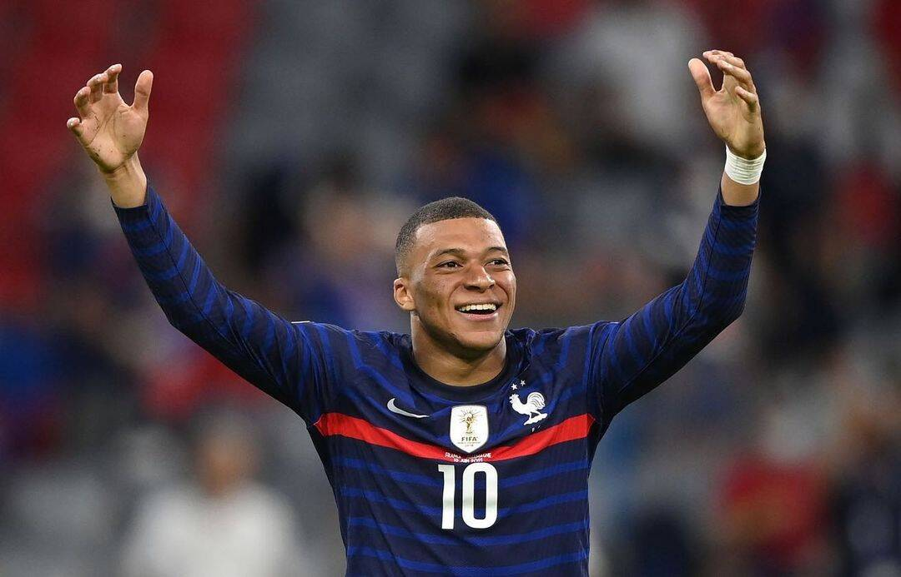O jogador francês de 23 anos vem para sua segunda Copa do mundo e vai tentar ser campeão pela segunda vez também, Mbappé foi incrível na última copa e ajudou sua seleção a ser bicampeã mundial. Mbappé se destaca pelos dribles e pela sua alta velocidade, os zagueiros que se cuidem. Na última temporada, o craque disputou 46 jogos, anotou 39 gols e 26 assistências, uma ótima temporada.
Harry Kane
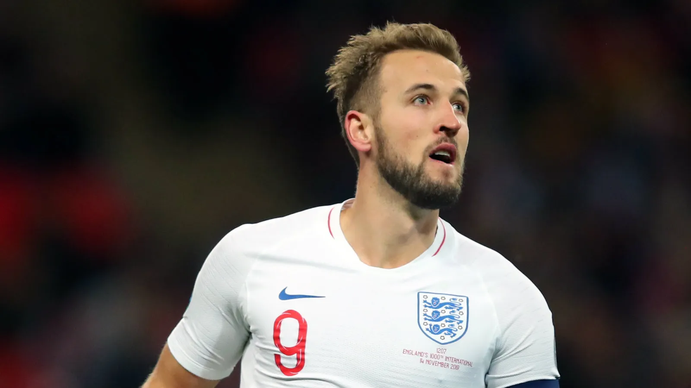"Furacão Kane" como alguns o chamam está sedento para conquistar algum título,seja pela seleção ou pelo Tottenham, mas sabemos bem que pelo Tottenham está difícil então resta tentar a Copa, o centroavante inglês é um baita de um jogador e pode ser o que a seleção inglesa precisa para ganhar a Copa. Atualmente com 28 anos,o craque inglês na última temporada jogou 50 partidas e anotou 27 gols e 10 assistências.